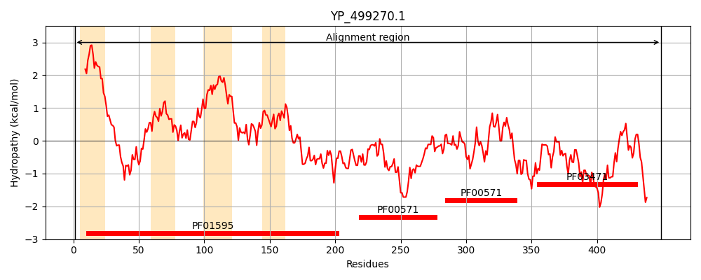
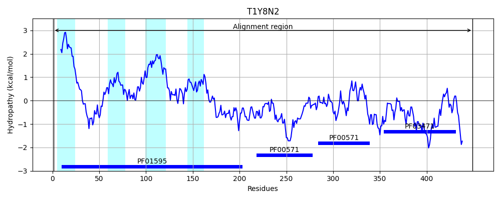
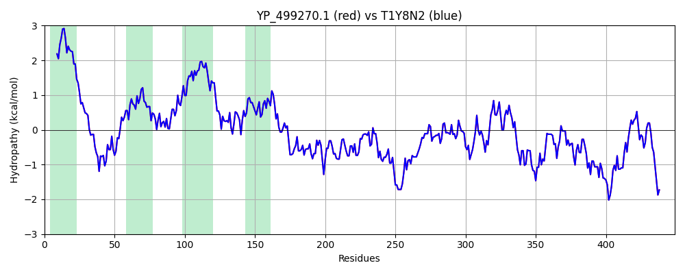

Hit Accession: T1Y8N2
Hit TCID: 1.A.112.2.10
Hit Description: gnl|BL_ORD_ID|20210 gnl|TC-DB|T1Y8N2|1.A.112.2.10 Magnesium and cobalt efflux protein corC OS=Staphylococcus aureus subsp. aureus CN1 OX=1193576 GN=SAKOR_00699 PE=4 SV=1
Mach Len: 449
e:0.000000
Query TMS Count : 4
Hit TMS Count: 4
TMS-Overlap Score: 4.100000
Predicted Substrates:CHEBI:18420;magnesium(2+)
BLAST Alignment:
Score: 2298 , Bit scores: 889 bits, E-value: 0.0e+00, Alignment length: 449, Percentage identity: 100
Query: 1 METSTIISLIIFILLIALTTVFVGSEFALVKIRATRIEQLADEGNKPAKIVKKMIANLDYYLSACQLGITVTSLGLGWLGEPTFEKLLHPIFEAINLPTALTTTISFAVSFIIVTYLHVVLGELAPKSIAIQHTEKLALVYARPLFYFGNIMKPLIWLMNGSARVIIRMFGVNPDAQTDAMSEEEIKIIINNSYNGGEINQTELAYMQNIFSFDERHAKDIMVPRTQMITLNEPFNVDELLETIKEHQFTRYPITDDGDKDHIKGFINVKEFLTEYASGKTIKIANYIHELPMISETTRISDALIRMQREHVHMSLIIDEYGGTAGILTMEDILEEIVGEIRDEFDDDEVNDIVKIDNKTFQVNGRVLLDDLTEEFGIEFDDSEDIDTIGGWLQSRNTNLQKDDYVDTTYDRWVVSEIDNHQIIWVILNYEFNEARPTIGQSDEDEKSE 449
METSTIISLIIFILLIALTTVFVGSEFALVKIRATRIEQLADEGNKPAKIVKKMIANLDYYLSACQLGITVTSLGLGWLGEPTFEKLLHPIFEAINLPTALTTTISFAVSFIIVTYLHVVLGELAPKSIAIQHTEKLALVYARPLFYFGNIMKPLIWLMNGSARVIIRMFGVNPDAQTDAMSEEEIKIIINNSYNGGEINQTELAYMQNIFSFDERHAKDIMVPRTQMITLNEPFNVDELLETIKEHQFTRYPITDDGDKDHIKGFINVKEFLTEYASGKTIKIANYIHELPMISETTRISDALIRMQREHVHMSLIIDEYGGTAGILTMEDILEEIVGEIRDEFDDDEVNDIVKIDNKTFQVNGRVLLDDLTEEFGIEFDDSEDIDTIGGWLQSRNTNLQKDDYVDTTYDRWVVSEIDNHQIIWVILNYEFNEARPTIGQSDEDEKSE
Sbjct: 1 METSTIISLIIFILLIALTTVFVGSEFALVKIRATRIEQLADEGNKPAKIVKKMIANLDYYLSACQLGITVTSLGLGWLGEPTFEKLLHPIFEAINLPTALTTTISFAVSFIIVTYLHVVLGELAPKSIAIQHTEKLALVYARPLFYFGNIMKPLIWLMNGSARVIIRMFGVNPDAQTDAMSEEEIKIIINNSYNGGEINQTELAYMQNIFSFDERHAKDIMVPRTQMITLNEPFNVDELLETIKEHQFTRYPITDDGDKDHIKGFINVKEFLTEYASGKTIKIANYIHELPMISETTRISDALIRMQREHVHMSLIIDEYGGTAGILTMEDILEEIVGEIRDEFDDDEVNDIVKIDNKTFQVNGRVLLDDLTEEFGIEFDDSEDIDTIGGWLQSRNTNLQKDDYVDTTYDRWVVSEIDNHQIIWVILNYEFNEARPTIGQSDEDEKSE 449 | Protein Hydropathy Plots: |
|---|
|  |  |
Pairwise Alignment-Hydropathy Plot:
|
|---|
|  |